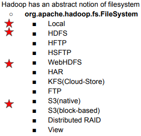
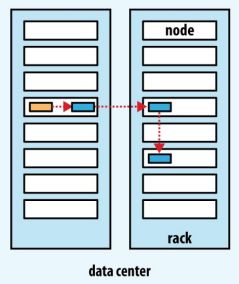
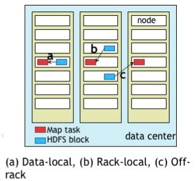

Design of HDFS
- 큰 파일을 저장할 수 있다
- Streaming data access pattern
: 사용자에게 끊기지 않고 데이터를 읽을 수 있게 해준다. 하드웨어에서 데이터 손실이 나더라도 그 손실을 느끼지 않게. 한 번 쓰고, 여러번 읽는다는 컨셉.
- Commodity hardware
: node spec이 고사양이 아닌 평범한 머신을 여러 개로 구성해서 cluster화 시킴. 슈퍼 컴퓨터 X
Trade Off
- Low-latency data access
: 높은 데이터 처리량과 불러오는 시간 (high throughput / expense of latency)
- Lots of small files
: data block이 작아서 data 저장 위치와 index를 저장해야 하는 손실
1MB block -> 200개 / 128mb block -> 2개
HDFS는 큰 파일을 저장하기 위해 만들어진 것
Blocks
데이터를 한 번 읽을 때 불러오는 양
default: 128MB
Hadoop은 큰 블록으로 이루어짐: seek time (탐색 비용) 최소화하기 위해서
**transfer rate
block 128MB -> 추상화가 잘 되어 있음
블럭 크기에 맞춰서 replication을 잘 만들게 되어 있음
복제: 한 하드웨어에서 문제 생겨도 백업
Splitting
input size를 블럭 사이즈로 잘 나눈 것
data 크기
block은 물리적, split은 논리적
Namenode, Datanodes
master: slave들이 어떤 일을 할지, 그들 간의 네트워크
namenode - master, datanode - worker
namenode가 저장하는 것: name space image, edit-log
heart beat: datanode는 3초마다 namenode에게 살아 있다는 신호를 보냄
HA: server를 똑같은 것 여러 개 구성, 대용량 요청이 들어오면(새해 인사) load balance 가 분산적으로 여러 서버에 처리, 고가용성(high-availability): 서버 하나가 죽어도 돌아가도록, hass? hash check를 계속 살아 있는지 체크해서 죽었으면 그쪽으로 데이터 안 보냄
SPOF: single point of failure: 한 노드가 죽어버리면 모든 cluster가 shut down
name node는 SPOF, without the namenode, the filesystem cannot be used
secondary namenode: runs on a separate physical machine because it requires plenty of CPU and as much memory as the namenode to perform the merge. 데이터 용량 때문에 / 하나 다운돼도 괜찮으려고
Hadoop Filesystems

다양한 file system을 지원한다.
Replica Placement
Fault tolerance: 고장이 발생해도 얼마나 유연하게 대처할 수 있는지
Hadoop은 replication 개념으로 처리하고 있다
규칙
- 신뢰성: Node (machine)이 하나 다운되더라도, 잘 백업할 수 있다
- 대역폭 (write): namenode에서 쓰기 대역폭을 최대한 배려해서 썼다 -> 신뢰성을 조금 포기 : map reduce 최대한 쓰지 않고 싱글 노드 안에서 알아서 썼다 -> 가까운 곳에 같은 노드에 배치하면 죽을 때 같이 죽지만 가까이 불러오긴 편함

1. 같은 싱글 노드에 배치
2. 다른 rack에 배치
3. 다른 rack, 다른 node에 배치
Data Locality

processing 개념, data 읽어오는 방향, map task
어떻게 하면 data를 빨리 불러올 수 있을지
블럭이 있는 자리에 map task를 놓으면 바로 불러올 수 있는데
a: single machine이 busy할 때, 다른 작업 때문에 CPU가 모자랄 수 있으니까
b: 같은 rack, 다른 node에 map task 할당
c: 모든 rack이 busy하면 다른 rack에서